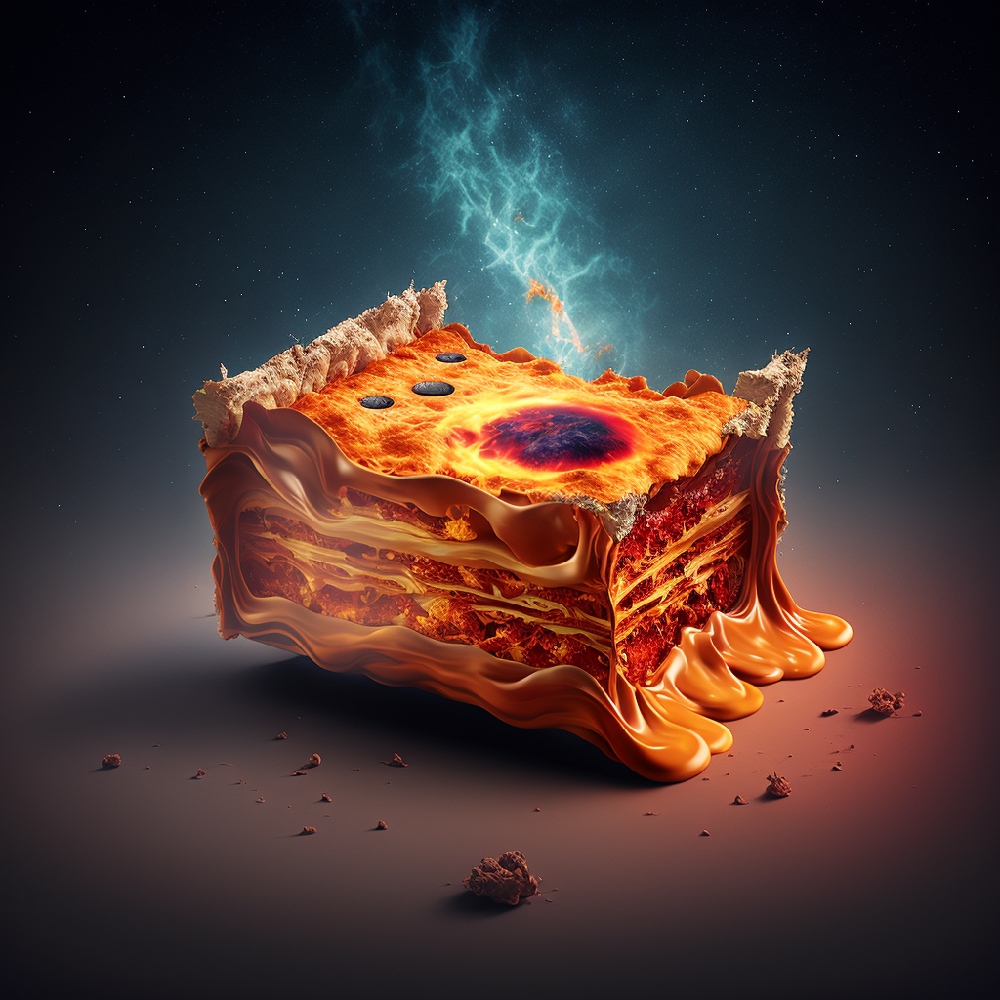

Alien Lasanga
This is a recipe for intergalactic lasagna found in alien cookbook
Ingredients:
- 1 lb. of a type of protein from a distant planet (ex. a type of extraterrestrial meat)
- 1 lb. of a type of pasta made from a unique grain from a distant planet
- 1 cup of a type of cheese made from a different type of milk from a distant planet
- 1 cup of a type of sauce made from a type of alien-grown tomatoes
- 1 cup of a type of vegetable from a distant planet, chopped (ex. a type of alien leafy greens)
- 1/4 cup of a type of seasoning from a distant planet (ex. a type of alien spice)
Instructions:
- Preheat the oven to 350 degrees.
- Cook the protein in a pan over medium heat until fully cooked.
- Cook the pasta according to the package instructions.
- In a separate pan, sauté the vegetables until tender.
- In a mixing bowl, combine the cooked protein, pasta, sautéed vegetables, cheese, sauce, and seasoning.
- Layer the mixture in a baking dish, starting with a layer of sauce on the bottom.
- Repeat the layers until all ingredients are used.
- Top with extra cheese.
- Cover with foil and bake for 25 minutes.
- Remove the foil and bake for an additional 25 minutes, or until the cheese is golden and bubbly.
- Let cool for 10 minutes before serving.
- Keep in mind that this is just a recipe idea and the specific ingredients you would use would be based on your creativity and imagination.
